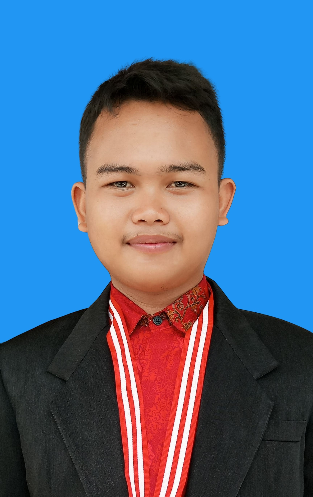

Overview
Saya adalah mahasiswa semester 4 jurusan teknik informatika di Universitas Harkat Negeri Tegal. Saya memiliki minat dalam bidang teknologi dan ingin menjadi developer.

Mahasiswa Universitas Harkat Negeri Tegal, Teknik Informatika
Saya adalah mahasiswa semester 4 jurusan teknik informatika di Universitas Harkat Negeri Tegal. Saya memiliki minat dalam bidang teknologi dan ingin menjadi developer.
| Skill | Pengalaman |
|---|---|
|
|